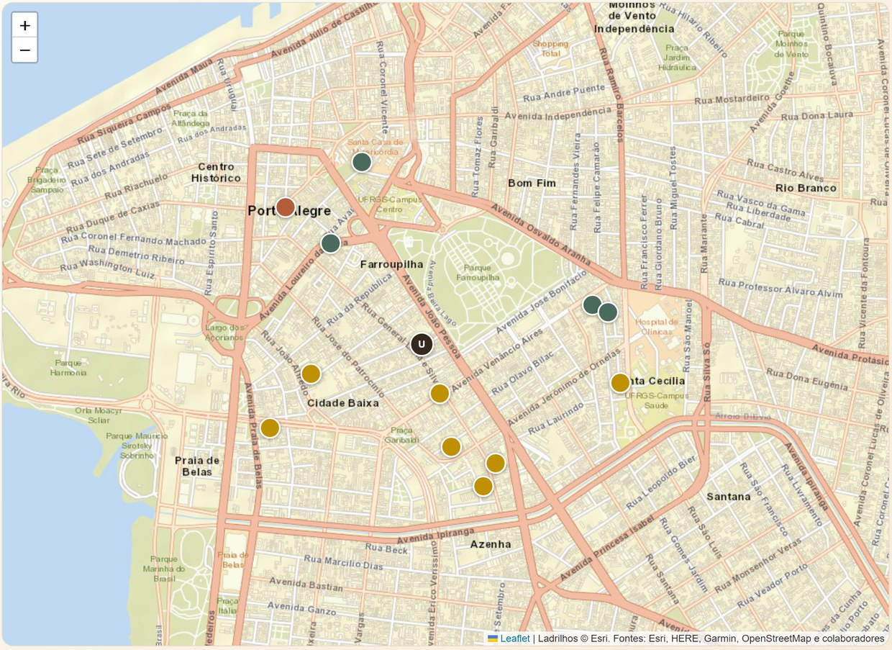
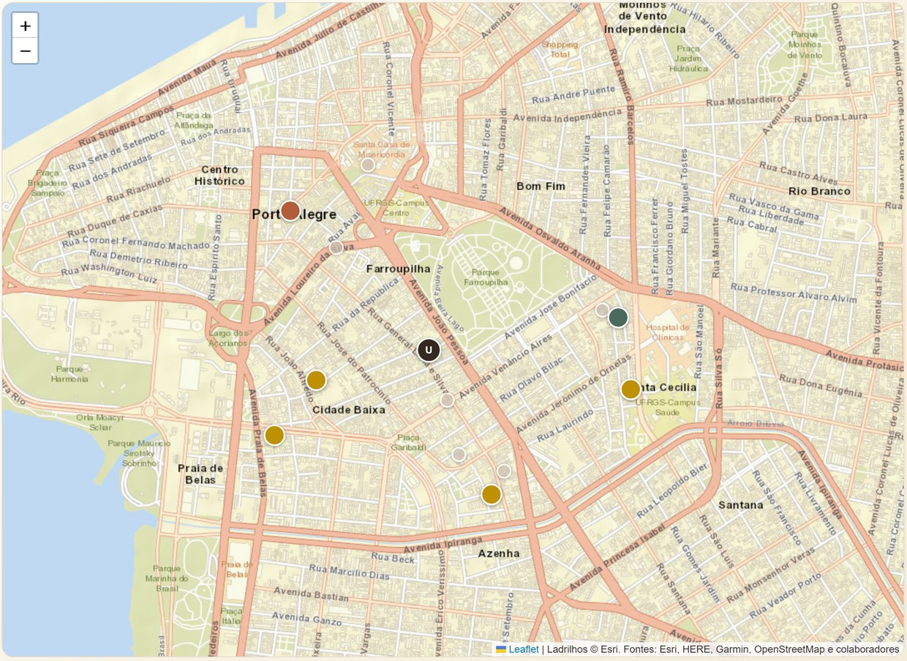
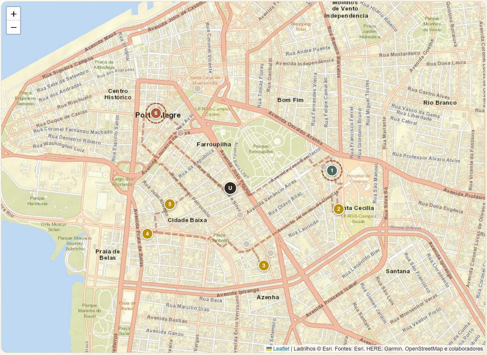
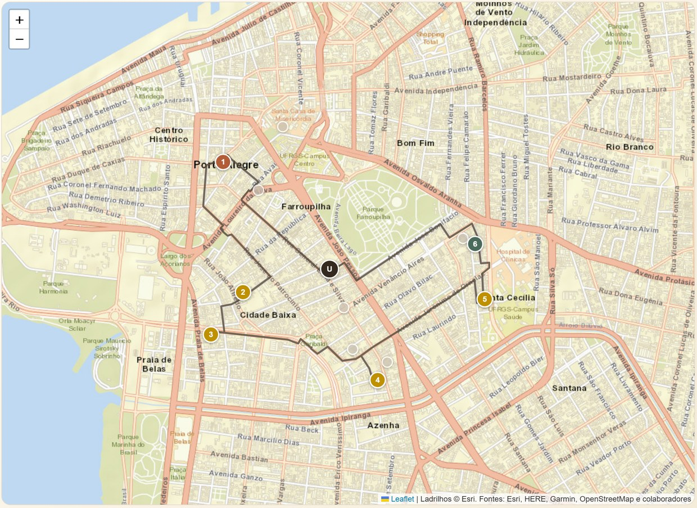

Visitas domiciliares de Agentes Comunitários de Saúde na Atenção Primária do SUS.
Minimizar deslocamento, cobrir o território no prazo e respeitar a capacidade da equipe. Roteirizadores já resolvem isso bem.
A Lei 11.350/2006 diz o que o agente pode fazer em cada residência. E nem toda condição é estática: insumo e supervisão se esgotam ao longo do turno.
A pergunta não é qual o menor percurso, e sim se aquela sequência de atendimentos é executável sem violar a norma.
Três condições conjuntivas e um efeito obrigatório: é a forma de um esquema de ação STRIPS, o formalismo de 1971 em que o Planejamento Automatizado se apoia.
A fita de glicemia só se repõe na unidade. Acabar no meio da rota obriga um desvio não previsto.
O § 4º exige assistência de profissional de nível superior, e ela se encerra quando o agente deixa a residência.
Uma decisão tomada na terceira parada pode inviabilizar a sétima.
É isso que impede decompor o turno visita a visita, e é por isso que um laço for sobre a rota não resolve.
Reconhece qualificação profissional como restrição, mas a trata como etiqueta fixa de compatibilidade.
Fikar & Hirsch (2017)
Cissé et al. (2017)
Diretrizes clínicas já são traduzidas para planejamento automatizado, mas sem componente de roteamento.
González-Ferrer et al. (2013)
Bradbrook et al. (2005)
A jornada de motoristas na União Europeia é lei embutida em roteirização, e tem revisão sistemática própria.
Archetti & Savelsbergh (2009)
Goel (2010) · Goel & Kok (2011)
A arquitetura que usamos, rota já fixada e depois uma camada que verifica a norma, tem nome na literatura: Truck Driver Scheduling Problem.
O que não encontramos na literatura é esta combinação: a sequência de ações obrigatórias dentro da visita, derivada de norma jurídica, como domínio declarativo acoplado a roteamento, com a qualificação tratada como soma de condições que se gastam e não como etiqueta fixa.
Um artigo e um algoritmo novo por jurisdição: União Europeia, Estados Unidos, Canadá, Austrália. O mesmo problema resolvido quatro vezes.
Esse é o custo de manutenção do caminho procedural, acontecendo por vinte anos. Ninguém o quantificou. Nós quantificamos.
Prioridade clínica e atraso em relação ao intervalo máximo, sob orçamento de tempo.
Algoritmo genético sobre a matriz de distâncias. Entrega a rota e o custo de desviar até a unidade.
Domínio PDDL com as condições legais e os recursos finitos. Decide as ações e os desvios de reposição.
A camada 3 nunca escolhe a rota: ela só anda pelas arestas que a camada 2 autorizou. Por isso trocar o roteirizador não muda uma linha do domínio.
Um executor procedural simples alcança desempenho equivalente.
O custo da busca cresce a ponto de inviabilizar microáreas reais.
Uma correção manual de poucas linhas leva o executor procedural de 22% de falsos negativos a 0%.
Sem precedência, o ganho dele vira +1,4%, 0,0% e −0,3%. A vantagem vinha da restrição, não do operador.
Na busca satisfaciente, que é a que escala, ele entrega planos 3,5% mais caros, piores em 16 de 25.
O caminho 1 de erro, previsto no slide da hipótese, foi exatamente o que se materializou.
O executor procedural depende de alguém descobrir cada interação entre regras antes de respeitá-la. O planejamento lê as regras do domínio e deriva a ordem correta sozinho.
Pegamos o mesmo modelo declarativo e o varremos com busca cega, sem heurística nenhuma. Se ela resolvesse, chamar o nosso trabalho de Planejamento Automatizado seria inflar o que de fato usamos.
Expande de 112 a 934 vezes mais estados.
Um turno real de ACS tem de 10 a 15 visitas.
Declaratividade sozinha não escala. Busca sozinha não absorve regra nova. Planejamento Automatizado é o nome da combinação das duas.
Submetemos os mesmos arquivos ao pyperplan, do grupo de Malte Helmert, em Basileia, o mesmo grupo do Fast Downward. Ele tem parser, grounding e busca próprios, e não compartilha uma linha com o nosso código.
Concordância total sobre viabilidade e sobre o comprimento mínimo do plano, incluindo os dois casos inviáveis e o domínio estendido.
A maior ameaça à validade do trabalho deixou de estar em aberto.

São 12 famílias cadastradas na microárea, com a unidade de saúde como ponto de partida e de retorno. Uma delas está em urgência alta. Nenhum turno cabe todas elas.

A política ordena por prioridade clínica e por atraso em relação ao intervalo máximo, e corta no orçamento de 240 minutos. Entram 6 famílias, e 6 ficam para o próximo turno, apagadas no mapa.
A camada geométrica devolve uma sequência de paradas com 94 minutos de caminhada. Ela otimiza distância, e só: não sabe o que a lei exige dentro de cada casa, nem que urgência alta tem de ser atendida antes de urgência baixa.

A 1ª parada é p4, de urgência baixa, e p7, de urgência alta, só viria na 6ª. Com a rota congelada, iniciar uma visita adiável exige que nenhuma urgência alta esteja pendente, e esse contador só baixa quando p7 é atendido.

A camada geométrica é chamada outra vez e devolve outra ordem. É a mesma volta percorrida ao contrário, e por isso custa exatamente os mesmos 94 minutos de caminhada.
O planejamento encontrou uma sequência de 51 ações, de custo 266 minutos, que cumpre as condições do art. 3º § 4º em todas as paradas: curso técnico, equipamento, supervisão ativa, insumo disponível e encaminhamento quando o procedimento o exige.
A saída não é uma linha no mapa, é um roteiro: em cada parada, o que fazer, em que ordem, e quando sair da rota para repor material na unidade. Neste turno o plano decidiu um desvio de reposição, em tracejado.
O programa procedural volta a falhar assim que entra uma regra que ninguém previu ao escrevê-lo.
Varrer o mesmo modelo sem heurística para em 5 ou 6 pacientes, e um turno real tem de 10 a 15.
O trunfo do trabalho não é ter usado Planning. É termos medido como ele ajuda, inclusive descobrindo que a resposta não era a que esperávamos.